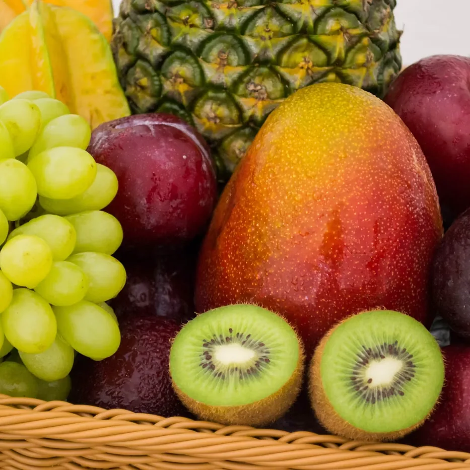

Manav Örnek fotoğraf
Tarabya · Şalcıkır Cd. 9A
Mahallenin durduğu dükkânGusto Organik
Kapı Şalcıkır Caddesi’nde. İçeride taze manav, şarküteri ve günlük reyon. Burası bir online market değil; uğrayın, rafları yerinde görün.


4,8
Google · 30 değerlendirme
Tarabya
Şalcıkır Cd. 9A · Yol tarifi
7 gün
Pazartesi–Pazar açık
Servis
Mahalle teslimatı yorumlarda
Mekân
Şalcıkır Caddesi 9A
Tabela, vitrin, reyon. Burası bir sepet değil; Tarabya’da durduğunuz dükkân.
Mekân
Tarabya’nın sakin organik marketi
Gusto Organik, Şalcıkır Caddesi 9A’da durur. Tabelada doğal ürünler yazar; içeride taze manav ve şarküteri vardır.
Komşularımız temiz içeriği, ilgili kadroyu ve ev servisini anlatıyor. Instagram’da @gustoorganik.
Sokağımızın altına açılan cevher.
Komşularımız
Mahalleden notlar
30 değerlendirme, 4,8 puan. Alıntılar Google Haritalar’dan.
“Organik taze meyve sebzeler harika, şarküteride aradığım her şeyi bulabildim, eve servisleri de var. Tavsiye ederim.”
“Sokağımızın altına açılan cevher. Temiz içerik, ilgili, donanımlı kadro ve en güzeli de evimize servis.”
Ziyaret
Tarabya’da sizi bekleriz
Şalcıkır Caddesi 9A. Yol tarifi alın veya yazın — dükkân yerinde.
Bilgi
Kısa sorular
Yanıtı burada yoksa bize yazın.
Sipariş veya bilgi için nasıl ulaşabilirim?
Mesajınızı yazın; tek tıkla WhatsApp üzerinden gönderin. Numaramız 0531 648 86 96.
Çalışma saatleriniz nedir?
Pazartesi 08:30–20:30, salı–cuma 09:00–20:30, cumartesi 09:00–19:30, pazar 11:00–18:00.
Ev servisi var mı?
Mahalle teslimatı yorumlarda geçiyor. Güncel kapsam için yazın.
Neler satıyorsunuz?
Organik meyve-sebze, şarküteri, vegan ve glutensiz ürünler. Güncel reyon için yazın.
Neredesiniz?
Tarabya, Şalcıkır Cd. 9A, 34457 Sarıyer / İstanbul.
Yol
Kapıyı bulun
Şalcıkır Caddesi 9A, Tarabya.
İletişim
Şalcıkır Caddesi 9A
Telefon
0531 648 86 96
WhatsApp
0531 648 86 96
Adres
Tarabya, Şalcıkır Cd. 9A, 34457, Sarıyer / İstanbul
| Pazartesi | 08:30 — 20:30 |
| Salı — Cuma | 09:00 — 20:30 |
| Cumartesi | 09:00 — 19:30 |
| Pazar | 11:00 — 18:00 |